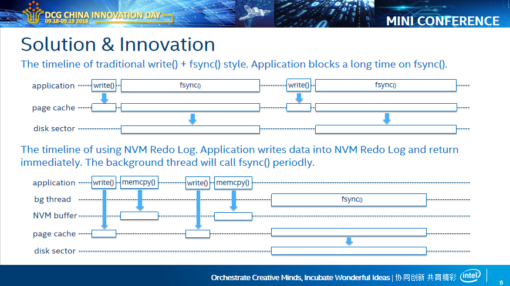
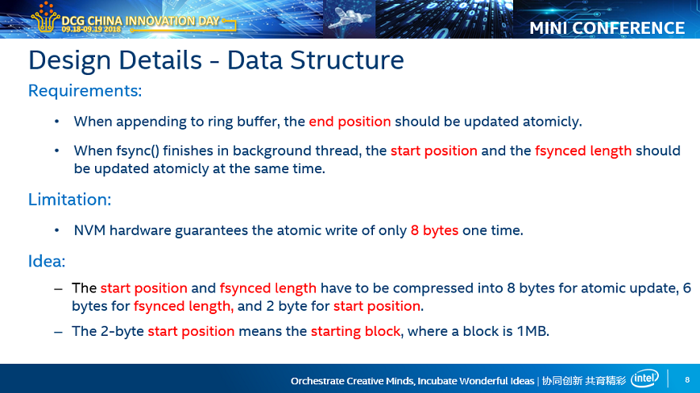

在《NVM缓冲日志文件libnvmbuflog（一）——环形缓冲区nvmbuffer》中，我设计了一种很复杂的NVM环形队列，以实现磁盘文件的NVM缓冲。当时之所以设计地这么复杂，主要是两方面的矛盾：
- 需要保证写入操作的原子性；
- 需要保证顺序写；
第二点其实不太科学。第二点的存在，是因为过去测出来的数据是，NVM上的顺序写比随机写性能要快很多。而且这条规律对于DDR也适用。之所以是这样，其实是因为cache作祟。顺序写时，每一个64字节，只有第一字节被访问时，才会触发cache miss，之后的访问都在cache中发生。而随机写时，几乎每一次都会触发cache miss。但是问题在于，在NVM buffer中，每次写入NVM，都是需要持久化，也就是说调用clwb指令，把数据从cache刷到NVM硬件。
那么，能不能绕过cache直接把数据写入NVM硬件呢？直接写入NVM硬件，就免去了加载cache、刷出cahce的无用功，性能能够有所提升。而且，由于没有cache的存在，所以随机写和顺序写是一样的性能，这样算法设计上就没有第二点的局限。我最近写的《IA64架构上实现绕过cache的内存写操作——nt_set_64()与nt_memcpy()》就是为了今天这一篇博客。
没有了第二点的局限，那么算法就变得非常非常简单：用一个存在于NVM上的变量表示buffer的长度即可。当要写入数据时，先追加buffer内容，然后修改buffer长度即可。由于修改一个8字节变量是原子性的，所以写buffer也就是原子性的。
当然，实际应用中，我需要ring buffer，这样一边能够在尾部写数据，一边能够在头部删除数据。我们需要三个存在于NVM上变量：file_len、buf_start、buf_end，分别表示磁盘文件长度、ring buffer开头位置、ring buffer结尾位置。当向buffer尾部写入数据时，只需要“先写buffer，后修改buf_end”即可保证原子性。当数据已经落盘、从buffer头部删除数据时，需要同时更新file_len和buf_start，保证file_len和buf_start要么都更新成功，要么都更新不成功。但是，硬件只能保证8字节写入的原子性，因此最方便的方法就是把file_len和buf_start挤在一个8字节内。
file_len可能会非常大，而且可能是任意整数，因此不得不给file_len留足够的比特位。我选了6字节，也就是48位，最大可以表示256TB，应该足够表示文件大小。另外的2字节最大表示65536。那么ring buffer最大只能是64KB了？也太小了吧......如何用来表示开头位置呢？
我引入了“块”的概念，比如每一个块1MB，2字节的buf_start用于表示“ring buffer从哪一个块开始”。这样，唯一的限制就是，ring buffer的开头必须是1MB的整数倍。但是，这不是多大的阻碍。于是，ring buffer最大就可以是64GB了，足够了~
当用户想要写数据时，那么先直接向文件写入（基本都在page cache中），然后再写NVM ring buffer。后台有个线程会在恰当的时候调用fdatasync()。当fdatasync()返回时，那么更新file_len和buf_start，相当于说“文件增长，buffer缩短”。在整个过程中，NVM buffer只会被写，而不会被读。只有当真的系统断电后，进程恢复时，才需要用NVM buffer中的数据修复文件。因此，正如zhiming所说，最准确的命名应该叫做NVM Redo Log。
突然觉得我的PPT做的不错，直接贴过来，互补：



OK，那就直接上代码了：
首先是common.h，定义了一些基本的assert()、DEBUG()和ERROR()，还有从open()的可变参数列表中获取mode参数的宏。
#ifndef COMMON_H
#define COMMON_H
#include <stdio.h>
#ifdef NO_ASSERT
#define assert(x) ((void*)0)
#else
#include <assert.h>
#endif
#define DEBUG(msgs...) \
({ \
fprintf(stderr, "[<%s> @ %s: %d]: ", __FUNCTION__, __FILE__, __LINE__); \
fprintf(stderr, ##msgs); \
printf("\n"); \
})
#define ERROR(ret, show_errstr, msgs...) \
({ \
fprintf(stderr, "[<%s> @ %s: %d]: ", __FUNCTION__, __FILE__, __LINE__); \
fprintf(stderr, ##msgs); \
if(show_errstr) \
perror(0); \
else \
printf("\n"); \
return (ret); \
})
#define GET_OPEN_MODE(flags) \
({ \
int _mode = 0; \
if(flags & O_CREAT) \
{ \
va_list _args; \
va_start(_args, flags); \
_mode = va_arg(_args, int); \
va_end(_args); \
} \
_mode; \
})
#endif
接着是syscall.h和syscall.c，定义并实现了项目中会用到的系统调用（因为之后会使用LD_PRELOAD替换open()、write()、close()等系统调用，避免函数无穷的递归调用）。
syscall.h
#ifndef SYSCALL_H #define SYSCALL_H #include <stdlib.h> #include <sys/stat.h> int syscall_faccessat(int dirfd, const char* file, int mode, int flags); int syscall_rename(const char* oldpath, const char* newpath); int syscall_renameat(int olddirfd, const char* oldpath, int newdirfd, const char* newpath); int syscall_unlink(const char* file); int syscall_unlinkat(int dirfd, const char* file, int flags); int syscall_open(const char* file, int flags, ...); int syscall_openat(int dirfd, const char* file, int flags, ...); ssize_t syscall_write(int fd, const void* data, size_t len); int syscall_fsync(int fd); int syscall_fdatasync(int fd); int syscall_fstat(int fd, struct stat* stat); int syscall_ftruncate(int fd, size_t size); void* syscall_mmap(void* addr, size_t length, int prot, int flags, int fd, off_t offset); int syscall_close(int fd); #endif
syscall.c
#include "common.h"
#include "syscall.h"
#include <fcntl.h>
#include <stdarg.h>
#include <unistd.h>
#include <sys/syscall.h>
int syscall_faccessat(int dirfd, const char* file, int mode, int flags)
{
return syscall(SYS_faccessat, dirfd, file, mode, flags);
}
int syscall_rename(const char* oldpath, const char* newpath)
{
return syscall(SYS_rename, oldpath, newpath);
}
int syscall_renameat(int olddirfd, const char* oldpath, int newdirfd, const char* newpath)
{
return syscall(SYS_renameat, olddirfd, oldpath, newdirfd, newpath);
}
int syscall_unlink(const char* file)
{
return syscall(SYS_unlink, file);
}
int syscall_unlinkat(int dirfd, const char* file, int flags)
{
return syscall(SYS_unlinkat, dirfd, file, flags);
}
int syscall_open(const char* file, int flags, ...)
{
return syscall(SYS_open, file, flags, GET_OPEN_MODE(flags));
}
int syscall_openat(int dirfd, const char* file, int flags, ...)
{
return syscall(SYS_openat, dirfd, file, flags, GET_OPEN_MODE(flags));
}
ssize_t syscall_write(int fd, const void* data, size_t len)
{
return syscall(SYS_write, fd, data, len);
}
int syscall_fsync(int fd)
{
return syscall(SYS_fsync, fd);
}
int syscall_fdatasync(int fd)
{
return syscall(SYS_fdatasync, fd);
}
int syscall_fstat(int fd, struct stat* stat)
{
return syscall(SYS_fstat, fd, stat);
}
int syscall_ftruncate(int fd, size_t size)
{
return syscall(SYS_ftruncate, fd, size);
}
void* syscall_mmap(void* addr, size_t length, int prot, int flags, int fd, off_t offset)
{
return (void*)syscall(SYS_mmap, addr, length, prot, flags, fd, offset);
}
int syscall_close(int fd)
{
return syscall(SYS_close, fd);
}
接下来就是重点了，aofguard.h定义了aofguard的数据结构和接口：
#ifndef AOFGUARD_H
#define AOFGUARD_H
#include <stdlib.h>
#include <pthread.h>
#include <semaphore.h>
struct aofguard
{
struct
{
int fd; // 目标文件描述符
size_t fsync_len; // 已经确认落盘的长度
}
file;
struct
{
char* data; // NVM ring buffer数据区
size_t capacity; // NVM ring buffer容量
size_t start; // NVM ring buffer起始位置
size_t len; // NVM ring buffer当前数据长度
}
buffer;
struct
{
size_t* fsync_len_and_start_block; // 存放于NVM上的metadata 1: fsync_len与start_block的混合
size_t* buf_end; // 存放于NVM上的metadata 2: buf end
}
meta;
struct
{
size_t block_count; // 本次后台fdatasync()结束后能够确保落盘的块数
pthread_t thread; // 后台线程
sem_t sem_start, sem_done; // “有后台fdatasync()任务”和“后台fdatasync()任务完成”的信号量
}
afsync;
};
/*
初始化aofguard
fd: 目标文件描述符
nvm_dir_fd: NVM文件目录
nvm_file: 用作NVM buffer的文件
nvm_size: nvm_file大小
reset: 如果NVM文件已经存在，是否重置
成功返回1，失败返回0。
*/
int aofguard_init(struct aofguard* aofguard, int fd, int nvm_dir_fd, const char* nvm_file, size_t nvm_size, int reset);
/*
向aofguard写入数据
data: 数据源
len: 数据长度
成功返回1，失败返回0。该函数保证写入的原子性。
*/
int aofguard_write(struct aofguard* aofguard, const void* data, size_t len);
/*
销毁aofguard
成功返回1，失败返回0。
*/
int aofguard_deinit(struct aofguard* aofguard);
#endif
接着就是最终的实现，aofguard.c：
#include "common.h"
#include "syscall.h"
#include "aofguard.h"
#include <fcntl.h>
#include <errno.h>
#include <unistd.h>
#include <sys/mman.h>
#include <sys/stat.h>
#define BLOCK_SIZE (1 << 20)
#define FSYNC(fd) syscall_fdatasync(fd)
#define MAKE_MIXED_META(fsync_len, buf_start) \
(((fsync_len) & (size_t)0xffffffffffff) | \
((((buf_start) / BLOCK_SIZE) << 48) & (size_t)0xffff000000000000)) \
#define GET_FSYNC_LEN(mixed_meta) ((mixed_meta) & (size_t)0xffffffffffff)
#define GET_BUF_START(mixed_meta) ((((mixed_meta) >> 48) & 0xffff) * BLOCK_SIZE)
static void nvm_set_64(void* ptr, long long val)
{
assert(((size_t)ptr & 7) == 0);
__builtin_ia32_movnti64(ptr, val);
}
static void nvm_memcpy(void* dst, const void* src, size_t len)
{
if(!len)
return;
void* align = (void*)((size_t)dst & ~(size_t)7);
assert(align <= dst);
if(align < dst)
{
long long head = *((long long*)align);
size_t front_sz = dst - align;
assert(front_sz < 8);
size_t back_sz = 8 - front_sz;
if(len <= back_sz)
{
for(size_t i = 0; i < len; i++)
((char*)&head)[front_sz + i] = ((char*)src)[i];
__builtin_ia32_movnti64(align, head);
return;
}
else
{
for(size_t i = 0; i < back_sz; i++)
((char*)&head)[front_sz + i] = ((char*)src)[i];
__builtin_ia32_movnti64(align, head);
dst += back_sz;
src += back_sz;
len -= back_sz;
}
}
assert(len);
assert(((size_t)dst & 7) == 0);
while(len >= 8)
{
__builtin_ia32_movnti64(dst, *((long long*)src));
dst += 8;
src += 8;
len -= 8;
}
if(len)
{
long long tail = *((long long*)dst);
for(size_t i = 0; i < len; i++)
((char*)&tail)[i] = ((char*)src)[i];
__builtin_ia32_movnti64(dst, tail);
}
}
static void* afsync_thread(void* arg)
{
struct aofguard* aofguard = arg;
while(1)
{
if(sem_wait(&(aofguard->afsync.sem_start)) != 0)
ERROR((void*)0, 1, "sem_wait(&(aofguard->afsync.sem_start)) failed: ");
if(FSYNC(aofguard->file.fd) != 0)
ERROR((void*)0, 1, "FSYNC(%d) failed: ", aofguard->file.fd);
if(sem_post(&(aofguard->afsync.sem_done)) != 0)
ERROR((void*)0, 1, "sem_post(&(aofguard->afsync.sem_done)) failed: ");
}
}
int aofguard_init(struct aofguard* aofguard, int fd, int nvm_dir_fd, const char* nvm_file, size_t nvm_size, int reset)
{
assert(aofguard);
assert(nvm_file);
if(fd < 0)
ERROR(0, 0, "param <fd = %d> is invaild!", fd);
size_t block_count = nvm_size / BLOCK_SIZE;
if(block_count < 2)
ERROR(0, 0, "param <nvm_size = %lu> is too small!", nvm_size);
if(block_count > 65536)
ERROR(0, 0, "param <nvm_size = %lu> is too big!", nvm_size);
size_t nvm_file_size = 2 * sizeof(size_t) + block_count * BLOCK_SIZE;
int nvm_file_exist = syscall_faccessat(nvm_dir_fd, nvm_file, F_OK, 0) == 0;
int nvm_fd;
if(nvm_file_exist)
{
if((nvm_fd = syscall_openat(nvm_dir_fd, nvm_file, O_RDWR)) < 0)
ERROR(0, 1, "cannot open file '%s': ", nvm_file);
struct stat stat;
if(syscall_fstat(nvm_fd, &stat) != 0)
ERROR(0, 1, "fstat(%d, &stat) failed: ", nvm_fd);
if(stat.st_size != nvm_file_size)
ERROR(0, 0, "file '%s' is broken!", nvm_file);
}
else
{
if((nvm_fd = syscall_openat(nvm_dir_fd, nvm_file, O_CREAT | O_RDWR, 0666)) < 0)
ERROR(0, 1, "cannot create file '%s': ", nvm_file);
if(syscall_ftruncate(nvm_fd, nvm_file_size) != 0)
ERROR(0, 1, "ftruncate(%d, %lu) failed: ", nvm_fd, nvm_file_size);
}
void* nvm_buf = syscall_mmap(0, nvm_file_size, PROT_READ | PROT_WRITE, MAP_SHARED, nvm_fd, 0);
if(nvm_buf == MAP_FAILED)
ERROR(0, 1, "mmap(0, %lu, PROT_READ | PROT_WRITE, MAP_SHARED, %d, 0) failed: ", nvm_file_size, nvm_fd);
syscall_close(nvm_fd);
struct stat stat;
if(syscall_fstat(fd, &stat) != 0)
ERROR(0, 1, "fstat(%d, &stat) failed: ", fd);
aofguard->file.fd = fd;
aofguard->buffer.data = (char*)nvm_buf + 2 * sizeof(size_t);
aofguard->buffer.capacity = block_count * BLOCK_SIZE;
aofguard->meta.fsync_len_and_start_block = (size_t*)nvm_buf;
aofguard->meta.buf_end = (size_t*)nvm_buf + 1;
if(nvm_file_exist && !reset)
{
size_t mixed_meta = *(aofguard->meta.fsync_len_and_start_block);
aofguard->file.fsync_len = GET_FSYNC_LEN(mixed_meta);
aofguard->buffer.start = GET_BUF_START(mixed_meta);
if(aofguard->buffer.start >= aofguard->buffer.capacity)
ERROR(0, 0, "file '%s' is broken!", nvm_file);
size_t buf_end = (*aofguard->meta.buf_end);
if(buf_end >= aofguard->buffer.capacity)
ERROR(0, 0, "file '%s' is broken!", nvm_file);
if(buf_end >= aofguard->buffer.start)
aofguard->buffer.len = buf_end - aofguard->buffer.start;
else
aofguard->buffer.len = aofguard->buffer.capacity + buf_end - aofguard->buffer.start;
if(stat.st_size < aofguard->file.fsync_len)
ERROR(0, 0, "file fd = %d is broken!", fd);
if(stat.st_size > aofguard->file.fsync_len && syscall_ftruncate(fd, aofguard->file.fsync_len) != 0)
ERROR(0, 1, "ftruncate(%d, %lu) failed: ", fd, aofguard->file.fsync_len);
size_t buf_start = aofguard->buffer.start, buf_len = aofguard->buffer.len;
if(buf_start + buf_len <= aofguard->buffer.capacity)
{
if(syscall_write(fd, aofguard->buffer.data + buf_start, buf_len) != buf_len)
ERROR(0, 1, "write(%d, aofguard->buffer.data + %lu, %lu) failed: ", fd, buf_start, buf_len);
}
else
{
size_t front_sz = aofguard->buffer.capacity - buf_start;
if(syscall_write(fd, aofguard->buffer.data + buf_start, front_sz) != front_sz)
ERROR(0, 1, "write(%d, aofguard->buffer.data + %lu, %lu) failed: ", fd, buf_start, front_sz);
size_t back_sz = buf_len - front_sz;
if(syscall_write(fd, aofguard->buffer.data, back_sz) != back_sz)
ERROR(0, 1, "write(%d, aofguard->buffer.data, %lu) failed: ", fd, back_sz);
}
}
else
{
aofguard->file.fsync_len = stat.st_size;
aofguard->buffer.start = 0;
aofguard->buffer.len = 0;
nvm_set_64(aofguard->meta.fsync_len_and_start_block, aofguard->file.fsync_len);
nvm_set_64(aofguard->meta.buf_end, 0);
}
aofguard->afsync.block_count = 0;
if(sem_init(&(aofguard->afsync.sem_start), 0, 0) != 0)
ERROR(0, 1, "sem_init(&(aofguard->afsync.sem_start), 0, 0) failed: ");
if(sem_init(&(aofguard->afsync.sem_done), 0, 0) != 0)
ERROR(0, 1, "sem_init(&(aofguard->afsync.sem_done), 0, 0) failed: ");
if(pthread_create(&(aofguard->afsync.thread), 0, afsync_thread, aofguard) != 0)
ERROR(0, 1, "pthread_create(&(aofguard->afsync.thread), 0, afsync_thread, aofguard) failed!");
return 1;
}
#define RING_BUF_FORWARD(val, addition, capacity) \
({ \
(val) += (addition); \
if((val) >= (capacity)) \
(val) -= (capacity); \
assert((val) < (capacity)); \
})
#define RING_BUF_END(start, len, capacity) \
({ \
typeof(start) _end = (start); \
RING_BUF_FORWARD(_end, len, capacity); \
_end; \
})
static void update_after_fsync(struct aofguard* aofguard, size_t block_count)
{
if(block_count == 0)
return;
size_t fsync_size = block_count * BLOCK_SIZE;
RING_BUF_FORWARD(aofguard->buffer.start, fsync_size, aofguard->buffer.capacity);
assert(aofguard->buffer.start % BLOCK_SIZE == 0);
assert(fsync_size <= aofguard->buffer.len);
aofguard->buffer.len -= fsync_size;
aofguard->file.fsync_len += fsync_size;
size_t mixed_meta = MAKE_MIXED_META(aofguard->file.fsync_len, aofguard->buffer.start);
nvm_set_64(aofguard->meta.fsync_len_and_start_block, mixed_meta);
}
static int handle_afsync_if_finish(struct aofguard* aofguard)
{
if(aofguard->afsync.block_count == 0)
return 1;
int ret = sem_trywait(&(aofguard->afsync.sem_done));
if(ret == 0)
{
update_after_fsync(aofguard, aofguard->afsync.block_count);
aofguard->afsync.block_count = 0;
return 1;
}
else
{
if(errno == EAGAIN)
return 1;
ERROR(0, 1, "sem_trywait(&(aofguard->afsync.sem_done)) failed: ");
}
}
static int do_fsync(struct aofguard* aofguard)
{
if(FSYNC(aofguard->file.fd) != 0)
ERROR(0, 1, "FSYNC(%d) failed: ", aofguard->file.fd);
update_after_fsync(aofguard, aofguard->buffer.len / BLOCK_SIZE);
return 1;
}
static int wait_afsync_done(struct aofguard* aofguard)
{
if(aofguard->afsync.block_count == 0)
return 1;
if(sem_wait(&((aofguard)->afsync.sem_done)) != 0)
ERROR(0, 1, "sem_wait(&((aofguard)->afsync.sem_done)) failed: ");
update_after_fsync(aofguard, aofguard->afsync.block_count);
aofguard->afsync.block_count = 0;
return 1;
}
int aofguard_write(struct aofguard* aofguard, const void* data, size_t len)
{
assert(aofguard);
assert(data);
if(!handle_afsync_if_finish(aofguard))
ERROR(0, 0, "handle_afsync_if_finish(aofguard) failed!");
if(aofguard->buffer.len + len > aofguard->buffer.capacity)
{
if((aofguard->buffer.len % BLOCK_SIZE) + len > aofguard->buffer.capacity)
ERROR(0, 1, "param <len = %lu> is too big to write atomicly!", len);
if(!wait_afsync_done(aofguard))
ERROR(0, 0, "wait_afsyc_done(aofguard) failed!");
if(aofguard->buffer.len + len > aofguard->buffer.capacity && !do_fsync(aofguard))
ERROR(0, 0, "do_fsync(aofguard) failed!");
}
assert(aofguard->buffer.len + len <= aofguard->buffer.capacity);
if(syscall_write(aofguard->file.fd, data, len) != len)
ERROR(0, 1, "write(%d, data, %lu) failed: ", aofguard->file.fd, len);
size_t write_pos = RING_BUF_END(aofguard->buffer.start, aofguard->buffer.len, aofguard->buffer.capacity);
if(write_pos + len <= aofguard->buffer.capacity)
nvm_memcpy(aofguard->buffer.data + write_pos, data, len);
else
{
size_t front_sz = aofguard->buffer.capacity - write_pos;
nvm_memcpy(aofguard->buffer.data + write_pos, data, front_sz);
size_t back_sz = len - front_sz;
nvm_memcpy(aofguard->buffer.data, data + front_sz, back_sz);
}
aofguard->buffer.len += len;
assert(aofguard->buffer.len <= aofguard->buffer.capacity);
size_t buf_end = RING_BUF_END(aofguard->buffer.start, aofguard->buffer.len, aofguard->buffer.capacity);
nvm_set_64(aofguard->meta.buf_end, buf_end);
if(aofguard->buffer.len >= BLOCK_SIZE && aofguard->afsync.block_count == 0)
{
aofguard->afsync.block_count = aofguard->buffer.len / BLOCK_SIZE;
if(sem_post(&(aofguard->afsync.sem_start)) != 0)
ERROR(0, 1, "sem_post(&(aofguard->afsync.sem_start)) failed: ");
}
return 1;
}
int aofguard_deinit(struct aofguard* aofguard)
{
assert(aofguard);
if(pthread_cancel(aofguard->afsync.thread) != 0)
ERROR(0, 1, "pthread_cancel(%lu) failed: ", aofguard->afsync.thread);
void* ret_val;
if(pthread_join(aofguard->afsync.thread, &ret_val) != 0)
ERROR(0, 1, "pthread_join(%lu, &ret_val) failed: ", aofguard->afsync.thread);
assert(ret_val == PTHREAD_CANCELED);
void* map_addr = aofguard->meta.fsync_len_and_start_block;
size_t map_size = aofguard->buffer.capacity + 2 * sizeof(size_t);
if(munmap(map_addr, map_size) != 0)
ERROR(0, 1, "munmap(%p, %lu) failed: ", map_addr, map_size);
return 1;
}
从算法中可以得知，NVM buffer本身的大小，对于max atomic write size是有限制的！另外，如果写入速度太快，而写出磁盘的数据太慢，会导致aofguard_write()阻塞，直到之前的数据确认落盘后，才会继续写入。